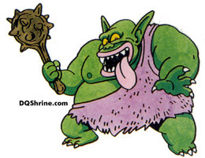

Trol (Internet)
 De: La Frikipedia, la enciclopedia extremadamente seria.
De: La Frikipedia, la enciclopedia extremadamente seria.
| De la serie monstruos mitológicos:
|
| Trol (Internet)
|
|
|
| Nombre Científico
|
Trollicus Warcrafticatulus Darkspear
|
| Hábitat
|
Siempre en los Cibers
|
| Organización
|
http://trollfag.blogspot.com/
|
| Actividad
|
Matar en Tres Dimensiones
|
| Dieta
|
Humanos, ovejas, tú y chicle
|
| Inteligencia
|
Demasiada
|
| Aparición
|
Cuando se creó el WoW
|
| Número aproximado
|
Tantos como jugadas al Warcraft
|
| Armadura
|
Madera de Árbol de la Eternidad de los elfos
|
| Ataques
|
Piñaca asesina, hostia voladora
|
| Moral
|
locura
|
| Notas
|
Ataca a humanos, Mariquelfitos y muertos
|
Un troll puede ser:
- Una persona que trae vida a un foro aburrido y soso con mensajes que buscan crear pánico y desconcierto entre los aburguesados integrantes de dicha web. Generalmente se caracterizan por su locura, sin embargo las sandeces que dicen bastan para enojar a los mongos, ñoños y aburridos geeks. Un troll de este tipo muere cuando alguien hace notar que el troll en cuestión y sólo busca atención o cuando el admin del foro se enoja con él y lo banea... se considera inmortal hasta que baneen la ip
- Un usuario que gusta de llamar troll a cualquiera que: los vence en una discusión, dice cosas que el verdadero troll no quiere que la gente sepa, o es cualquier idiota al que el troll de verdad decidió molestar. Este segundo tipo es aproximadamente el 96% de todos los trolls y a menudo se los conoce como Anti-troll.
- Un idiota rompe huevos que molesta diciendo que el artículo de Dakota Fanning es ofensivo.
- Cualquier usuario de Wikipedia
- Cualquiera que no pertenezca al SAFI.
- Cualquiera que no esté de acuerdo con el SAFI
- Cualquier entidad que edite en inciclopedia y no sea del SAFI.
- Alguien que no está de acuerdo con un bibliotecario.
- Los evangelistas que te tocan el timbre. (ver Trolls de la realidad)
- Los de la compañía de teléfono que te llaman a las 9 de la mañana. (ver Trolls de la realidad)
- uno ya aburrido de su FB
- IP anónima, tú mismo puedes ser uno
Supuestamente la palabra viene del inglés «trolling», un tipo de pesca que implica arrastrar una carnada por el lugar donde se espera pescar.
Los trolls que recién comienzan suelen tener la enfermedad conocida como «Remordimiento de troll». Estos sentimientos suelen acabar cuando el individuo se da cuenta de que la gente que toma a la internet como si fuera algo serio y verdaderamente se ofende por el trolleo, es estúpida y debería lidiar con su homosexualidad.
Los trolls experimentados pueden sufrir de desorden de personalidad trollil. Esto puede desembocar en un Síndrome de Troll Crónico (STC).
Los mejores lugares para comenzar tu entrenamiento, mi joven padawan, son todos aquellos que se toman a la internet muy de enserio, como inciclopedia , wikipedia, facebook y demás redes sociales. Es imposible trollear wikipediars, porque wikipediars está hecha de trolls. Trollear wikipediars es como tratar de ensuciar un chiquero de chanchos, o como prender un fósforo en un incendio, o como pillar en un mar de meada... ¿se entiende?
Subespecies
Troll virtual
Se trata de aquellos trolls que habitan en internet (sobre todo en los foros), aunque pueden ser encontrados por la calle de vez en cuando.Generalmente se decican a proteger a los newbies de los malvados moderadores, poniéndoles bans de por vida(de hecho el nombre troll viene de patroll for newbies, es decir, comer patatas de bolsa de aluminio)
- Troll de la red: Se puede decir de muchos de los habitantes indeseados de la red. Este tipo de Troll se destaca por su capacidad de permanecer horas y horas sentado delante de una pantalla (llegando en algunos casos a fusionarse con el asiento y el ordenador, generando así una nueva especie única llamada gordo cibernauta), durante estos largos periodos suelen navegar por internet "tocando las narices"(jodiendo las pelotas) a todos los felices habitantes de los foros, generando roces y tensiones entre los demás cibernautas. Este subgénero encuentra un hábitat idoneo en los foros del mítico oGame, ForoCoches, etc, donde abundan y se reproducen libremente (no hacemos especial hincapié en sus métodos de reproducción por lo escabroso y repulsivo que resulta el tema).
- Troll auténtico: Se trata de los trolles que sufren cierta demencia y/o trastornos mentales, aunque en el lugar donde viven (wow) no se les nota ya que casi todos están mucho peor.
- Troll reconvertido: Dícese de los Trolles de la red que afirman haberse reconvertido y ya no ser un fastidio de persona. Este subgénero es completamente una engaño desesperado, fruto de un intento de posible aceptación. El que ha sido Troll de la red, seguirá siendo igual de mamoncete y cabroncete hasta el fin del mundo (a menos que ocurra un cuasi-milagro).
- Troll (de verdad): También puede hacer uso a un ser supuestamente humano de sexo masculino o femenino que es tan diferente a las personas, y tan parecido a los del wow (parece que hacen cosplay) que provoca una asociación mental con esto seres fantásticos.
- Troll de biblioteca: De entre los trolles este es quizá uno de los más orgullosos y más inútiles. Posee un gran orgullo propio por el 10 que se saco alguna vez en la primaria. Este gran logro le autoproclama la facultad de joder a cualquier forero que cometa un error de ortografía. Es un género bastante común de encontrar.
No se adjuntan fotos de prototipos de troll, pero los reconocerás si te encuentras uno por la calle, porque fijo que tu vista o tu salud correrá peligro.
 Es feo y tonto, pero es aun peor si se conecta a internet
Troll de Barrio
El Troll de Barrio y su especie asociada Troll de Bar muestra las siguientes características: aspecto corpulento; vellosidad y tendencia al barriguismo (o corpus gaitae), poca disposición a realizar cambios de trayectoria, prefiriendo apartar los obstáculos que encuentra en su ruta; comunicación basada en gruñidos y expresión facial; alimentación basada en la cerveza y la oreja frita; amor por los cantos tribales y celebraciones varias; sensibilidad exacerbada.
Esta remota especie es poco vista hoy día, aunque en algunas zonas ferales como Brónxtoles experimenta un cierto resurgimiento. En esta ciudad son frecuentes en la Posada "El Ser Rano", donde incluso se ha llegado a ver hembras de la especie.
Segun estas características, un ejemplar fácilmente reconocible es este
Técnicas para trollear (Vida real)
- Piratear el sistema de televisión para emitir 2 girls 1 cup las 24 horas.
- Secuestrar soldados israelíes, pedir rescate, y cortarles la cabeza para subir el video a youtube.
- Instaurar un gobierno socialista.
- Instaurar un gobierno capitalista.
- Volar un avión y chocarlo accidentalmente sobre un edificio lleno de infieles que no adoran a Alá.
- Casarte con una niñita de 8 años, cojértela, y ser tan estúpido como para que te pida el divorcio
- Escuchar Ricardo Arjona a todo volumen (la mejor forma de trollear conocida por el hombre).
- Hacerse vegetariano.
- Escribir "Jesus te quiere" en papeles pequeños y echarlos por los buzones de las casas
- mandar insultos por aqui y por alla a travez del fb (fuckingbook)
- dar información falsa acerca de donde encontrar algo en los juegos mmorpg
Lugares donde trollear
¿Se puede trollear a un troll?
Los expertos dicen que es imposible trollear a un troll, pero algunos más expertos todavía dicen que sí.Recientes investigaciones indican que existe una especie casi inexistente llamada trolldad, mucho mas poderosos y son capaces de trollear varios usuarios sin apenas pestañear.
Enlaces de interés
http://trollfag.blogspot.com/
 Informática Informática
|
Personajes Infames Famosos
Dispositivos de Almacenamiento
|
Autor(es):
- Krusher
- Nexo
- Deket
- Erein
- JacintoCanek
- Homer Tunder
- Frikiman
- Aque
- Epikurolibre
- Vortigern Runaoscura
Frikipedia 2005-2016, Licencia
GFDL 1.2 - Extraído por FrikiLeaks